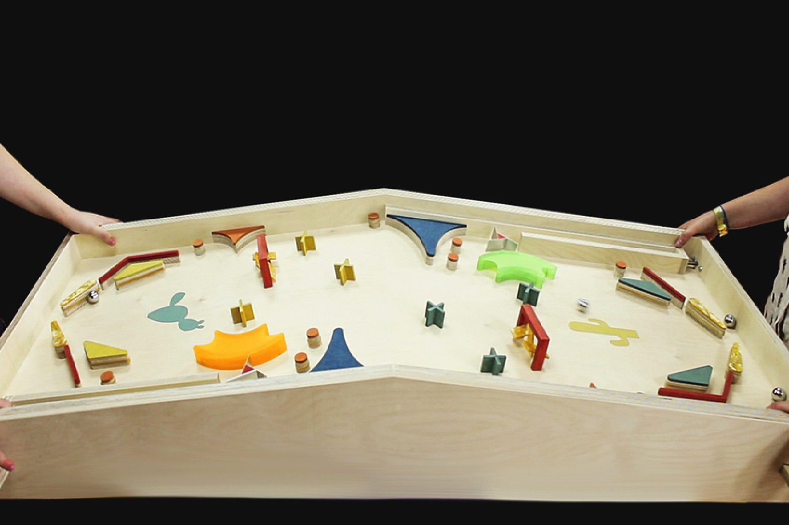

Report on a 2-Player Pinball Machine with Solenoids and Arduinos
Introduction
This report outlines the development of a two-player pinball machine, utilizing solenoids for mechanical movements and Arduino microcontrollers for control logic and interaction. The design incorporates standard pinball features such as flippers, bumpers, and score tracking, with additional customizations for a competitive two-player experience.
Components and Materials
Mechanical Components
- Solenoids: Used for flippers, bumpers, and kickers. Solenoids convert electrical energy into mechanical motion, essential for dynamic interactions in the pinball machine.
- Flippers: Controlled by solenoids, these are the primary means for players to interact with the ball.
- Bumpers: Activated by ball contact, they add to the game dynamics by changing the ball’s trajectory and scoring points.
- Ball Shooter: A spring-loaded mechanism to launch the ball into play.
- Playfield: The surface on which the ball rolls, featuring various obstacles and targets.
- Cabinet: The housing for the playfield and all components, including a backboard for display and scoring.
Electronic Components
- Arduino Microcontrollers: At least two Arduino boards (one for each player) to handle input from buttons, control solenoids, and manage scoring.
- Power Supply: A suitable power supply to drive solenoids and Arduino boards.
- Buttons and Switches: For player input and ball detection.
- LED Displays: For scoring and game status.
Additional Materials
- Wiring and Connectors: For electrical connections.
- Mounting Hardware: Screws, brackets, and mounts to secure components.
- Wood and Acrylic Sheets: For the playfield and cabinet construction.
Design and Construction
Mechanical Design
- Playfield Layout:
- Design the playfield with CAD software, placing bumpers, flippers, targets, and lanes strategically to ensure engaging gameplay.
- Cut the playfield from a suitable material, like plywood or acrylic.
- Solenoid Placement:
- Mount solenoids for flippers and bumpers beneath the playfield.
- Ensure solenoids have adequate power and response time for fast action.
- Ball Shooter Mechanism:
- Install the ball shooter at the bottom center of the playfield.
- Ensure smooth and consistent ball launch.
Electronic Design
- Arduino Control System:
- Write Arduino code to handle inputs from buttons and switches.
- Control solenoids using transistors or MOSFETs, as Arduino pins cannot supply sufficient current directly.
- Score Tracking:
- Use sensors (e.g., IR sensors or microswitches) to detect ball interactions with bumpers and targets.
- Update scores on LED displays in real-time.
- Power Management:
- Ensure solenoids have an adequate and stable power supply.
- Use a separate power supply for Arduinos and other electronics to prevent interference.
Assembly
- Cabinet Construction:
- Build the cabinet frame and install the playfield.
- Ensure easy access to electronic components for maintenance.
- Wiring and Connections:
- Connect solenoids, buttons, and sensors to the Arduino boards.
- Route wiring neatly to avoid interference and damage.
- Testing and Debugging:
- Test each component individually (e.g., flippers, bumpers) to ensure proper operation.
- Debug the Arduino code for reliable performance and accurate scoring.
Software Development
Arduino Code
- Initialization:
- Set up pins for inputs (buttons, sensors) and outputs (solenoids, LEDs).
- Main Loop:
- Continuously read inputs and control solenoids accordingly.
- Update scores based on sensor inputs and display them on the LED displays.
- Interrupts and Timing:
- Use interrupts for immediate response to critical events (e.g., button presses).
- Implement timing mechanisms to ensure smooth gameplay and prevent solenoid overheating.
Testing and Calibration
- Component Testing:
- Test each solenoid, sensor, and display individually to ensure they function correctly.
- Gameplay Testing:
- Play test sessions to ensure the game is engaging and all components respond appropriately.
- Adjust the power and response time of solenoids as needed.
- Calibration:
- Fine-tune sensor positions and sensitivity.
- Adjust flipper strength and bumper response for balanced gameplay.
.
